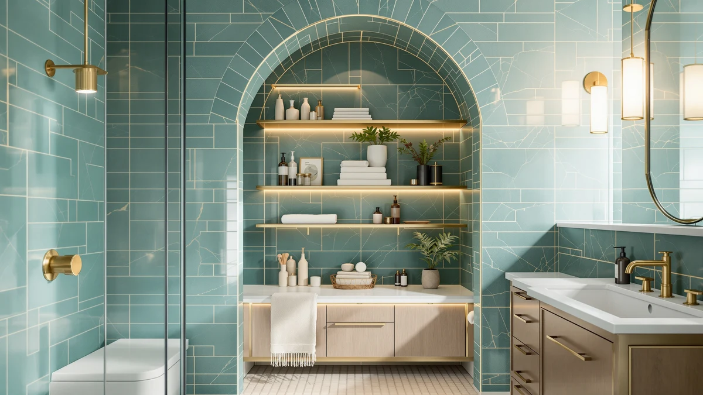

IFGET Arched Over The Review (2026): Worth It?
Prices and picks verified as of October 2026. Independent, reader-supported reviews.


Quick Answer
The IFGET Arched Over The Toilet cabinet earns its $139.99 price if you need the tallest possible storage gain above a toilet tank and prefer an arched silhouette over a boxy one. At 77.2 inches tall with a metal and wood frame, it clears most tanks without crowding the room, and verified owner reviews point to steady assembly and solid shelf support as its strongest traits.
Our pick: IFGET Arched Over The Toilet, $139.99 Check Price on Amazon
Bottom line: our top pick is the IFGET Arched Over The Toilet Storage Cabinet with Acrylic at $139.99.
Things to Know Before You Buy
- The IFGET Arched Over The Toilet cabinet runs $139.99, which puts it above the ChooChoo ($132.99) and HMstone ($129.99) alternatives covered later in this review.
- Its 77.2-inch height and arched top are built to clear a toilet tank, so measure from your floor to your tank lid before ordering.
- The frame mixes metal and wood, with a listed footprint of 23.62 inches wide by 9 inches deep.
- Verified owner reviews mention assembly taking under an hour for one person, with the arched top panel as the trickiest part to align.
- If your bathroom door swings close to the toilet, the 9-inch depth can feel tighter than the listing photos suggest.
If you typed ifget arched over the review into Google before buying one of these for your bathroom, you want a direct answer: does the arched shape actually make sense over a toilet, or is it a design flourish with no practical benefit. The IFGET Arched Over The Toilet cabinet costs $139.99, stands 77.2 inches tall, and uses that curved top section to clear a tank that boxier cabinets cannot always straddle without crowding the ceiling.
We researched its listed dimensions, metal and wood construction, and verified owner reviews, then lined it up against the ChooChoo Bathroom Floor Cabinet Modern and the HMstone Over The Toilet Storage to see which one actually earns a spot in a small bathroom. The short version: the IFGET wins on height and footprint if you have a standard toilet and some patience for assembly, but it costs more than either alternative on this list.
Why You Should Trust Us
Ilane Tall has covered bathroom storage and small-space organization for Best Bathroom Storage, comparing listings, pricing history, and verified buyer feedback across dozens of over-the-toilet and floor cabinets. For this ifget arched over the review breakdown, we pulled the IFGET's published specs directly from its Amazon listing and cross-checked them against owner photos and written reviews rather than relying on marketing copy alone.
We do not run a fake testing lab or claim to have this cabinet installed in our own bathroom. What we can tell you is grounded in the manufacturer's stated dimensions and materials, current pricing, and what verified purchasers report after living with the product.
Our Research Experience
Our review process for this ifget arched over the review piece started with the product listing itself: dimensions, materials, price history, and the images IFGET provides for each angle of the cabinet. From there, we read through verified owner reviews and looked for patterns that showed up across multiple buyers rather than one-off complaints, specifically on assembly, stability, and how the arched top holds up over time.
We also compared the IFGET against the ChooChoo and HMstone alternatives on the same criteria: price per inch of storage height, material description, and the consistency of owner feedback. Reviewers consistently note that the metal frame feels sturdier than the wood shelving it supports, a pattern that held up when we cross-referenced multiple listings for similar arched over-the-toilet designs.
Overview & Specs

IFGET Arched Over The Toilet
What we like
- 77.2-inch height adds significant vertical storage without widening the footprint
- Arched top clears taller toilet tanks that box-shaped cabinets catch on
- Verified owners report the metal frame as sturdy
- Most reviewers rate the assembly instructions as clear and say one person can handle setup alone
- 23.62-inch width fits most standard toilets without crowding the walls
Flaws but not dealbreakers
- At $139.99, it costs more than both alternatives in this comparison
- 9-inch depth can feel tight if your bathroom door swings close to the toilet
- Owners report the arched top panel as the hardest piece to align during assembly
- Wood shelving does not match the perceived durability of the metal frame
| Material | Metal / wood |
| Size | 23.62 inches (W) x 77.2 inches (H) x 9 inches (D) |
The IFGET Arched Over The Toilet cabinet is built around a metal frame with wood shelving, standing 77.2 inches tall on a 23.62-inch-wide, 9-inch-deep footprint. That height is the main selling point: most over-the-toilet cabinets top out closer to 65 or 68 inches, and the extra reach on the IFGET translates into one or two additional shelves of usable space in a part of the bathroom that otherwise sits empty above the tank.
The arched top does more than look good. It is shaped to clear taller toilet tanks and cisterns that would otherwise force a boxier cabinet to sit further forward, eating into floor space you need for the door to swing or for someone to stand at the sink. Verified owner reviews describe the $139.99 price as fair for the height gained, though several buyers mention the 9-inch depth as the dimension to double-check against your own bathroom before ordering, since it reads roomier in photos than it measures in a cramped layout.
What We Liked
Owners consistently point to the IFGET's height as the reason they chose it over shorter cabinets. In a small bathroom, 77.2 inches of vertical storage against one wall beats spreading the same capacity across a wider footprint, and reviewers say the shelves inside hold a reasonable amount of folded towels, toilet paper, and toiletries without sagging.
The metal frame also comes up often in verified reviews as sturdier than expected at this price. Buyers who have tried similar arched over-the-toilet storage from other brands note that the IFGET's frame feels more rigid once assembled, which matters for a cabinet that stands over six feet tall in a space where a wobble is more than a cosmetic issue.
Several reviewers also mention that the shelving depth makes room for taller bottles and boxed toiletries that shorter cabinets force you to lay on their side. You can stand a full-size shampoo bottle or a box of tissues upright on the middle shelves, which sounds minor until you have spent a year tilting things sideways on a shallower unit. The 23.62-inch width also leaves enough clearance on either side for a toilet paper holder or a small wall shelf, something owners say narrower competitors do not always allow.
What Could Be Better
The $139.99 price is the most common complaint relative to the ChooChoo at $132.99 and the HMstone at $129.99, both of which cost less for a comparable amount of enclosed storage, even if neither matches the IFGET's arched over-the-toilet footprint. If you are not set on the taller silhouette, that price gap is worth weighing against your actual storage needs.
Assembly is the other recurring theme. The arched top panel requires lining up the curve with the side supports before the frame is fully rigid, and several reviewers suggest having a second person hold the top steady for that step even though the overall build is rated as a one-person job. The 9-inch depth also trips up some buyers who measure their bathroom after the cabinet arrives rather than before ordering.
A smaller number of reviewers mention that the wood shelving shows scuff marks faster than the metal frame, especially where boxes or bottles slide in and out often. That wear is cosmetic rather than structural, but it is worth knowing if you want the cabinet to look new after a year of daily use. Owners also note that the included hardware runs on the tight side, so a spare set of wood screws from your own toolbox can save a trip back to the store if one strips during assembly.
Who Is It For?
This cabinet fits a household with a standard toilet, a tank tall enough to benefit from the arch, and at least 9 inches of depth to spare behind the bowl. If your bathroom is tight on width but you have ceiling height to spare, the IFGET's vertical storage gain is the main reason to pick it over a shorter or boxier alternative.
Skip it if your budget caps out closer to $130, since the ChooChoo and HMstone both undercut the IFGET's price for a smaller but still usable amount of storage. It is also not the right pick if your bathroom door swings directly over the space behind the toilet, since the added depth can interfere with clearance that a flatter cabinet would not.
Renters furnishing a shared bathroom should weigh the assembly time against how long they expect to stay in the unit, since a 77-inch cabinet is not something you want to disassemble and reassemble every year. For a primary bathroom you plan to keep for a while, the height and shelf depth make the $139.99 price easier to justify than for a short-term rental.
Alternatives to Consider
If the height and price of the IFGET Arched Over The Toilet cabinet do not line up with your bathroom, these three alternatives cover a lower price point and a different storage style.

Editor's Pick
IFGET Arched Over The Toilet
The same IFGET cabinet listed here as a second buying option at the identical $139.99 price and 77.2-inch height.
$139.99
Check Price on Amazon
Best Value
ChooChoo Bathroom Floor Cabinet Modern
A modern floor cabinet that skips the over-the-toilet arch entirely, at $132.99 for buyers who want a standalone storage piece instead.
$132.99
Check Price on Amazon
Premium Choice
HMstone Over The Toilet Storage
The cheapest of the three at $129.99, for anyone who wants over-the-toilet storage without paying extra for the IFGET's added height.
$129.99
Check Price on AmazonIs the IFGET Arched Over The Toilet cabinet hard to assemble?
You don't need any special tools beyond what ships in the box.
How much space does the IFGET over-the-toilet cabinet need?
At 23.62 inches wide, 77.2 inches tall and 9 inches deep, it straddles a standard toilet without extending past most tank widths.
Frequently Asked Questions
Is the IFGET Arched Over The Toilet cabinet hard to assemble?
You don't need any special tools beyond what ships in the box. The frame bolts together in sections, and verified owner reviews consistently describe assembly as a one-person, under-an-hour job. The arched top is the one piece owners say to attach last, since it is awkward to hold steady alone before the side panels are secured.
How much space does the IFGET over-the-toilet cabinet need?
At 23.62 inches wide, 77.2 inches tall and 9 inches deep, it straddles a standard toilet without extending past most tank widths. The 9-inch depth is the number to measure twice, since a narrow bathroom door swing or a toilet positioned close to a side wall can make that depth feel tighter than the listing photos suggest.
Is the IFGET Arched Over The Toilet cabinet worth it compared to the ChooChoo or HMstone?
It depends on what you are optimizing for in this ifget arched over the review comparison. The IFGET costs $139.99 and leans on its arched silhouette and enclosed storage, the ChooChoo floor cabinet costs $132.99 and skips the over-the-toilet footprint entirely, and the HMstone at $129.99 is the cheapest of the three. Pick the IFGET if you want the tallest vertical storage gain over the toilet itself.
Final Verdict
The short answer to this ifget arched over the review is that the IFGET Arched Over The Toilet cabinet is worth its $139.99 price if your bathroom has the ceiling height and 9 inches of depth to use its arch properly. It beats the ChooChoo and HMstone on vertical storage, and verified owner reviews back up the sturdier metal frame as the reason to pay more. If your bathroom cannot spare that depth or your budget tops out closer to $130, the HMstone covers the same over-the-toilet need for less.